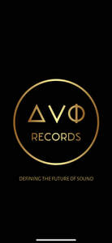

Trade Mark Journal No.2025/026 27 June 2025
UK00004219178 15 June 2025 (9,16,18,25,41)

- Class 9
- Music recordings; Music cassettes; Music tapes; Downloadable music sound recordings; Digital music players; Tape recordings of music; Pre-recorded CDs featuring music; Downloadable digital music; Audio tapes featuring music; Electronic sheet music, downloadable; Phonograph records featuring music; Musical video recordings; Prerecorded music audio tapes; Downloadable video recordings featuring music; Downloadable music files; Pre-recorded audio cassettes featuring music; Downloadable musical sound recordings; Digital music downloadable from the Internet; Musical recordings; Musical sound recordings; Pre-recorded DVDs featuring music; Prerecorded video cassettes featuring music; Prerecorded audio tapes featuring music; Series of musical sound recordings; Musical cassettes; Music headphones; Music software; Prerecorded music videos; Portable music players; Docking stations for digital music players; Prerecorded video tapes featuring music; Pre-recorded video tapes featuring music; Computer software for creating and editing music and sounds; Optical discs featuring music; Pre-recorded laser discs featuring music.
- Class 16
- Music books; Sheet music; Music sheets; Printed music; Music in sheet form; Printed music books; Printed educational materials; Printed teaching materials; Printed sheet music; Printed teaching material; Printed training materials; Printed packaging materials of paper; Printed periodicals in the field of music; Printed promotional material; Sheet music in printed form; Printed books in the field of music education; Printed instructional material on telecommunications; Printed correspondence course materials; Printed material in the nature of color samples; Printed art reproductions; Printed books; Printed visuals; Paper crafts materials; Printed curricula; Packaging materials made of recycled paper; Printed publications; Publications (Printed -); Decoration and art materials and media; Forms, printed; Printed forms; Materials for artists; Printed lectures; Paper teaching materials; Printed periodicals in the field of dance; Printed periodicals; Printed booklets; Photographs [printed]; Printed photographs; Binding materials for books and papers; Printed informational sheets; Printed publications relating to computers; Writing materials; Printed stationery; Covering materials for books; Printed periodicals in the field of movies; Printed pamphlets; Printed brochures; Printed paper labels; Bookbinding materials; Printed lessons; Printed information sheets; Packaging materials; Software programmes in printed form; Computer programmes in printed form; Printed advertisements; Printed greeting cards with electronic information stored therein; Packaging materials made of cardboard; Printed informational flyers; Computer programs in printed form; Printed flyers; Printed manuals; Drawing materials; Instructional materials; Printed patterns for costumes; Printed advertising boards of paper; Printed informational cards; Printed patterns; Printed periodicals in the field of figurative arts; Printed cardboard invitations; Bookbinding material.
- Class 18
- Bags; Tote bags; Luggage bags; Duffle bags; Duffel bags; Toiletry bags; Bags for clothes; Bags (Nose -) [feed bags]; Carrying bags; Carry-on bags; Drawstring bags; Carry-all bags; Belt bags and hip bags; Nose bags [feed bags]; Grocery tote bags; Cross-body bags; Bags for umbrellas; Diaper bags; Luggage, bags, wallets and other carriers; Crossbody bags; Cloth bags; Bucket bags; Leather bags; Sling bags; Nappy bags; Canvas bags; Shoe bags; Duffel bags for travel; Belt bags; Clutch bags; Wheeled bags; Kit bags; Travel bags; Bags for travel; Souvenir bags; Messenger bags; Garment bags; Leather bags and wallets; Shoulder bags; Toilet bags; Make-up bags; Cosmetic bags; Waterproof bags; Reusable shopping bags; Makeup bags; Umbrella bags; Camping bags; Towelling bags; Courier bags; Bags for campers; Bags for carrying pets; Roll bags; Gym bags; Knitted bags; Bags [envelopes, pouches] of leather, for packaging; Bags [envelopes, pouches] for packaging of leather; Bags [envelopes, pouches] of leather for packaging; Hand bags; Travelling bags; Attaché bags; Cabin bags; Flight bags; Traveling bags; Overnight bags; Beach bags; Bags for climbers; Mesh shopping bags; Boot bags; Mesh bags for shopping; Leather shopping bags; Canvas shopping bags; Bum bags; Hiking bags; Knitting bags; Frames for bags [structural parts of bags]; Roller bags; Nose bags; Suit bags; Wash bags for carrying toiletries; Gladstone bags; Hunting bags; Baby carrying bags; Feed bags; Waist bags.
- Class 25
- Clothing; Ready-to-wear clothing; Knitwear [clothing]; Clothing for sports; Sports clothing; Parts of clothing, footwear and headgear; Casual clothing; Jackets being sports clothing; Athletic clothing; Jackets [clothing]; Woolen clothing; Headbands [clothing]; Headbands for clothing; Jerseys [clothing]; Denims [clothing]; Fashion hats; Cashmere clothing; Furs [clothing]; Leisure clothing; Men's clothing; Leather clothing; Clothing of leather; Leather (Clothing of -); Garments for protecting clothing; Clothing for leisure wear; Playsuits [clothing]; Dance clothing; Corsets [clothing, foundation garments]; Embroidered clothing; Bandeaux [clothing]; Shorts [clothing]; Aprons [clothing]; Triathlon clothing; Layettes [clothing]; Clothing layettes; Clothing for cycling; Gabardines [clothing]; Capes (clothing); Maternity clothing; Silk clothing; Knitted clothing; Foulards [clothing articles]; Gloves for apparel; Linen clothing; Kerchiefs [clothing]; Clothing for skiing; Clothing for gymnastics; Gloves [clothing]; Gloves as clothing; Sportswear; Sports garments; Latex clothing; Collars [clothing]; Visors [clothing]; Wristbands [clothing]; Woven clothing; Ready-made clothing; Veils [clothing]; Jackets (Stuff -) [clothing]; Party hats [clothing]; Clothes; Oilskins [clothing]; Windproof clothing; Hoods [clothing]; Rainproof clothing; Waterproof clothing; Belts [clothing]; Belts for clothing; Stuff jackets [clothing]; Bottoms [clothing]; Trunks being clothing; Infant clothing; Drawers [clothing]; Drawers as clothing; Ties [clothing]; Clothing for children; Muffs [clothing]; Bodies [clothing]; Clothing for babies; Tops [clothing]; Clothing for infants; Weatherproof clothing; Fabric belts [clothing]; Water-resistant clothing; Pockets for clothing; Handwarmers [clothing]; Thermal clothing; Beach clothing; Cowls [clothing]; Chaps (clothing); Fishing clothing; Mitts [clothing]; Braces for clothing.
- Class 41
- Music concerts; Recording of music; Music recording; Music publishing and music recording services; Music performances; Production of music concerts; Presentation of music concerts; Live music concerts; Performance of music; Pop music concerts (Organisation of -); Production of music; Music production; Music concert services; Music publishing; Publishing of music; Production of sound and music recordings; Music festival services; Performing of music and singing; Live music performances; Music entertainment services; Arranging of music performances; Music composition services; Direction of music performances; Composition of music for others; Music composition for others; Music recording studio services; Music mixing services; Production of music shows; Live music shows; Music production services; Publication of sheet music; Music publishing services; Musical entertainment; Live musical concerts; Providing digital music from the internet; Musical concerts by television; Selection and compilation of pre-recorded music for broadcasting by others; Sound recording and video entertainment services; Musical concert services; Entertainment in the form of recorded music (Services providing -); Arranging of musical entertainment; Production of musical recordings; Live musical performances; Live band performances; Band performances (Live -); Live musical theater performances; Entertainment in the nature of live dance performances; Presentation of live dance performances; Provision of live musical performances; Organisation of live musical performances; Live performances by a musical bands; Production of live performances; Presentation of live entertainment performances; Entertainment in the nature of live performances by musical bands; Live performances by a musical band; Presentation of live performances by musical bands; Live music services; Performances (Presentation of live -); Live performances (Presentation of -); Presentation of live performances; Presentation of live comedy performances; Provision of live music; Organisation of live performances; Presentation of live show performances; Live dance exhibitions; Presentation of live performances by a musical group; Musical performances; Live band performance services; Theatrical performances both animated and live action; Entertainment in the nature of live performances by rock groups; Services providing entertainment in the form of live musical performances; Entertainment in the form of live musical performances (Services providing -); Presentation of live Christmas musical productions; Performance of music and singing; Entertainment in the nature of dance performances; Presentation of live performances by rock groups; Live entertainment; Provision of facilities for live band performances; Live performances by rock groups; Performance of dance, music and drama; Entertainment in the nature of orchestra performances; Production of live entertainment events; Live demonstrations for entertainment; Production of live entertainment; Arranging and presenting of live performances; Entertainment services in the nature of live performances of roller skating exhibitions and competitions; Theatre performances; Conducting of live entertainment events; Entertainment services in the form of concert performances; Theater performances; Entertainment in the nature of ballet performances; Presentation of live entertainment events; Entertainment in the nature of symphony orchestra performances; Live performance services; Presentation of musical performances; Production of live entertainment features; Presentation of musical concerts; Organisation of music concerts; Production of live shows; Live comedy shows; Music performance services; Theatrical performances; Presentation of live comedy shows; Entertainment in the nature of live performances and personal appearances by a costumed character; Entertainment services for producing live shows; Live stage shows; Jazz music entertainment services; Production of live television programmes for entertainment; Preparing subtitles for live theatrical events; Presentation of orchestra performances; Production of revue shows before live audiences; Entertainment services in the form of musical vocal group performances; Musical concerts by radio; Live entertainment production services; Live show production services; Organisation of musical performances; Entertainment services in the form of musical group performances; Live entertainment services; Conducting of live sports events; Arranging and conducting of live entertainment events; Circus performances; Entertainment in the nature of gymnastic performances; Production of entertainment shows featuring dancers and singers; Production of live television programmes; Arranging of music shows; Organisation of ice skating shows for live audiences; Artistic management of music venues; Production of entertainment shows featuring singers; Arranging and conducting of music concerts; Entertainment services in the form of cinema performances; Production of theatrical performances; Rental of phonographic and music recordings; Presentation of theatrical performances; Production of entertainment in the form of sound recordings; Provision of live entertainment; Conducting of live esports events; Performance of musical programmes.
Paul Andrew Loizou